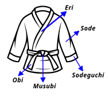

La giacca del judogi (Uwagi)
- Eri — Il bavero, spesso utilizzato per tenere sotto controllo l'avversario o per effettuare qualsiasi tipo di attacco.
- Sode — La manica: parte del kimono che di solito viene afferrata e utilizzata per eseguire diverse tecniche.
- Sodeguchi — L'apertura della manica: punto importante per sbilanciare l'avversario e mantenere il controllo della mano.
- Waki — L'ascella: rinforzata per il comfort del judoka.
- Koshi — L'anca: nel ju-jitsu si utilizzano molte tecniche d'anca ed è una parte essenziale del judogi.

La cintura (Obi)
- Musubi — Il nodo.
Pantaloni del Judogi (Zubon)
- Ashi — La gamba: la parte del corpo utilizzata per molte tecniche.
- Hiza — Il ginocchio: alcune tecniche, come l’Hiza Guruma, prendono il nome da questa parte del corpo.
- Mata — L’interno coscia; tecniche come l’Uchi Mata derivano da questo termine.
- Ashikubi — La caviglia: parte centrale nella rotazione, nel movimento e nell’esecuzione di molti movimenti.